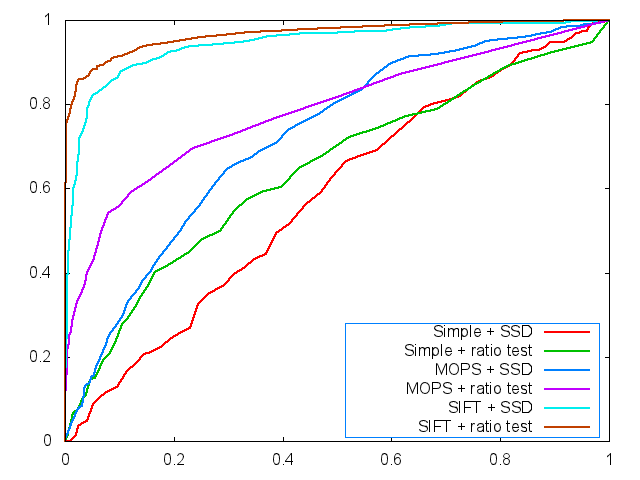
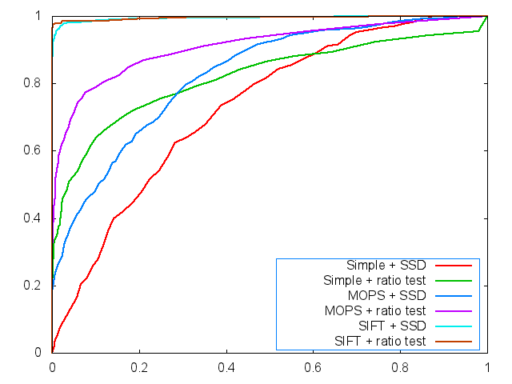
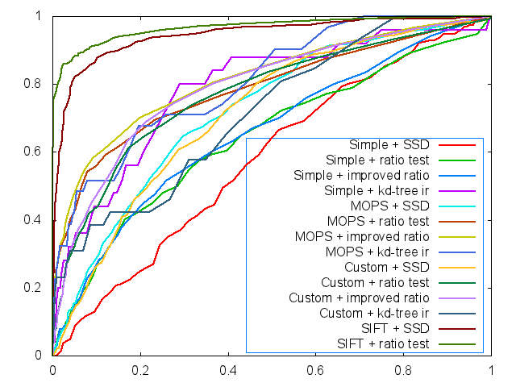
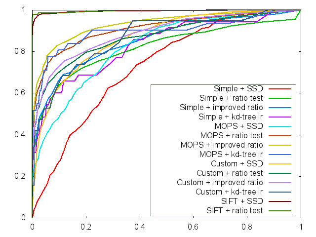
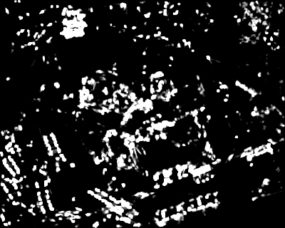
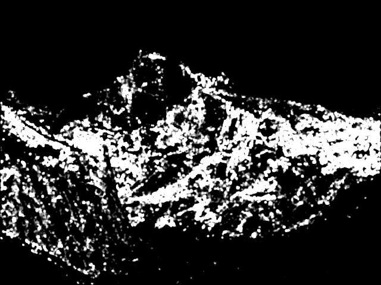

Yingchuan Hu (yh537), Hang Chu (hc772)
CS 4670/5670 Introduction to Computer Vision
Oct. 1st, 2013
Project 2: Feature Detection and Matching
I. Our Design
1. Feature Detection
-
Compute Harris Features
We generally followed the instructions from the slides and the instructions. We first applied two filters on the entire image to get the derivative image of x axis and y axis, and we computed the harris matrix of each pixel in its neighborhood using a gaussian mask and the derivative images (treat the value as zero when the sliding window is out of image boundary). Then we computed the harris score using the matrix. Finally we take the eigenvector corresponding to the first eigenvalue as the orientation of the feature, transformed to radian by atan() and atan()+pi.
-
Adaptive Nonmaximum Suppression
As is described in the MOPS paper, we computed the minimum suppression radius for every local maximum in the harris image using Eq.(10), and we only took the N points with largest suppression radius as the feature point. Note that if we have two points share the same value in one square, no feature point will be extracted from that square window.
2. Feature Description
-
Simple Window Descriptor
For the window descriptor, just as the instruction on the website, we used a 5x5 window as the feature descriptor which takes the raw data of the grayscale image. In fact, it would be illumination invariant if it is normalized by substracting the mean and dividing by the standard deviation.
-
MOPS Descriptor
We followed the MOPS paper and instructions on the website. By applying the rotation transform and the Gaussian kernel before down-sampling and calling WarpGlobal to do the mapping, we transformed the 40x40 window of the grayscale image to a 8x8 feature with a horizontal dominant direction. After that, we did normalization for the values by substracting the mean and dividing by the standard deviation.
-
Custom Descriptor

Inspired by the simple window descriptor and MOPS descriptor, we thought of constructing a circle-shape descriptor. However, it's redundant to choose all the points inside one circle and it's not enough to choose points on circle only. In this case, we came up with the concentric circles form of the descriptor. Specifically, we tested and decided to choose three concentric circles with radius 6, 12, 18 correspondingly. And we chose the first point to be the one at the dominant direction and then looped counter-clockwise, which makes the feature rotation invariant. After testing, we found that it's better to choose a point every 20 degrees. The sample pixel was rounded to the nearest integer neighbor. So together, for each feature, we have 360 / 20 * 3 = 54 values to describe it.
To note that the performance of this new descriptor is not as good but close to MOPS.
-
Scale Invariance
In order to make the feature detector scale invariant, we applied the pyramid structure. Instead of using the structure provided in the ImageLib, we did that by ourselves. By scaling the original image to 1/2, 1/3, 1/4 and 1/5, we computed the features in different scales. And different from the method which is given in class by choosing the maximum value of the features in a square, I keep the features from all scales.(We noticed that the number of features get less and less quickly as the scaling variant alpha decreases to near 0, especially after we applied adaptive nonmaximum suppression.) After some analyses, we concluded that in some situations this method was better than choosing the maximum and concluded that merging the features from all scales was reasonable. Also, that won't bring about too much computation cost.
3. Feature Matching
-
SSD Matching
This was already done by the framework.
-
Ratio Matching
To implement the ratio matching, we took the SSD matching as a reference. As we need to find the best and the second best, new variables were added to record the second best value and index. Assume dBest1 and idBest1 are used for the best match while dBest2 and idBest2 for the second best. Our algorithm can be described as follows:
if (d < dBest1)
update dBest2, dBest1;
else if (d >= dBest1 && d < dBest2)
update dBest2
And we get the ratio distance after looping through features.
-
Improved Ratio Matching
We noticed that the ratio test took advantage of the second best to make full use of the majority of information to distinguish between ambiguous matches. To note that there may be more than two ambiguous matches in one image, though the probability is low. In this case, we can improve the original ratio test by giving DISTANCE = p * FIRST_BEST / SECOND_BEST + (1 - p) * SECOND_BEST / THIRD_BEST, which absorbs more information and has better statistic distributions. Notice that p > 1 - p, and we choose p = 0.8 here.
To note that this new matching method has an average 0.014 increase in AUC for leuven, bikes and wall test sequences.
- Kd-tree Improved Ratio Matching
We used Approximate Nearest Neighbor (ANN: A Library for Approximate Nearest Neighbor Searching from David M. Mount and Sunil Arya) to speed up the feature matching process. However, as ANN is an approximate approach it may not always return the actual best matching result, to deal with this problem we first let ANN return the 10 nearest neighbors and conduct brute search in these 10 matches for the 3 (or 2,1 depending on the matching method) nearest neighbors. Experiment shows this approach speeds the matching procedure by 2-3 times, while still produces satisfactory matching accuracy.
II. Performance
1. ROC
The ROC curves are displayed below (graf and yosemite).


And for all ROC curves including custom descriptor, improved ratio match and kd-tree improved ratio match, we plotted the ROC curves as follows:


2. Image of Harris Operator


3. Average AUC
leuven:
|
SSD |
ratio test |
improved ratio test |
kd-tree improved ratio test |
| Simple Window Descriptor |
0.208008 |
0.500890 |
0.511718 |
0.439394 |
| MOPS Descriptor |
0.632387 |
0.669069 |
0.681089 |
0.617840 |
| My Own Descriptor |
0.632555 |
0.655203 |
0.667872 |
0.625959 |
bikes:
|
SSD |
ratio test |
improved ratio test |
kd-tree improved ratio test |
| Simple Window Descriptor |
0.429870 |
0.523828 |
0.527999 |
0.564001 |
| MOPS Descriptor |
0.677916 |
0.700415 |
0.721920 |
0.612995 |
| My Own Descriptor |
0.622444 |
0.670107 |
0.687494 |
0.644212 |
wall:
|
SSD |
ratio test |
improved ratio test |
kd-tree improved ratio test |
| Simple Window Descriptor |
0.307211 |
0.547159 |
0.552138 |
0.531165 |
| MOPS Descriptor |
0.574394 |
0.608491 |
0.615165 |
0.539280 |
| My Own Descriptor |
0.598584 |
0.588737 |
0.596019 |
0.563881 |
III. Strengths and Weeknesses
- We've implemented all the extra credits, which add to performance and efficiency.
- Our self-designed matching method outperforms the ratio test.
- Our implementation is invariant to translation, which is the property of Harris features.
- It is illumination invariant, since the descriptors are subtracted by the mean and then divided by the standard deviation.
- It is rotation invariant, since values in the feature descriptors begin with the dominant orientation and MOPS transforms to the same dominant direction.
- It is scale invariant, since we compute features for six scales of the original image.
- The radius of the concentric circle descriptor may affect image differently. Generally, small radius is better for high frequency features, and larger radius is better for low frequency features. Optimizations can be done.
- The kd-tree method is just an approximate algorithm. Better performance is expected using better speeding up algorithms.
IV. Our Images and Performance


V. Summary of Our Design (Extra Credits)
In spite of the basic requirements, we have implemented all the extra credits as follows:
1. Designed and implemented our own feature descriptor (By Yingchuan Hu)
// See Feature Description --> 2
2. Implemented adaptive non-maximum suppression (By Hang Chu)
// See Feature Detection --> 2
3. Made our feature detector scale invariant (By Yingchuan Hu)
// See Feature Description --> 4
4. Implemented a method that outperforms the ratio test (By Yingchuan Hu)
// See Feature Matching --> 3
5. Used a fast search algorithm to speed up the matching process (By Hang Chu)
// See Feature Matching --> 4
VI. FAQ
Q1: How to configure our project?
A1: As we applied kd-tree for matching based on the ANN:A Library for Approximate Nearest Neighbor Searching from David M. Mount and Sunil Arya (http://www.cs.umd.edu/~mount/ANN/) , you need to merge the code/lib and code/include with the original documents such that you have the required *.dll, *.h and *.lib files. Also, right click on Project Features in the Solution Explorer->Configurations->Linker->Input->Additional Dependencies, add ANN.lib and apply so that the linker will find the lib file.
Q2: How to run our program?
A2: Be sure that you have copy ANN.dll under the path of Features.exe. We have modified FeaturesMain.cpp to give you guidance on our feature types, descriptor types and matching types, which are also listed here as follows.
Featuretype (1: Dummy 2: Harris)
Descriptortype (1: Window 2: MOPS 3: Custom)
Matchtype (1: SSD 2: Ratio 3: Improved Ratio 4: Kd-tree Improved Ratio)